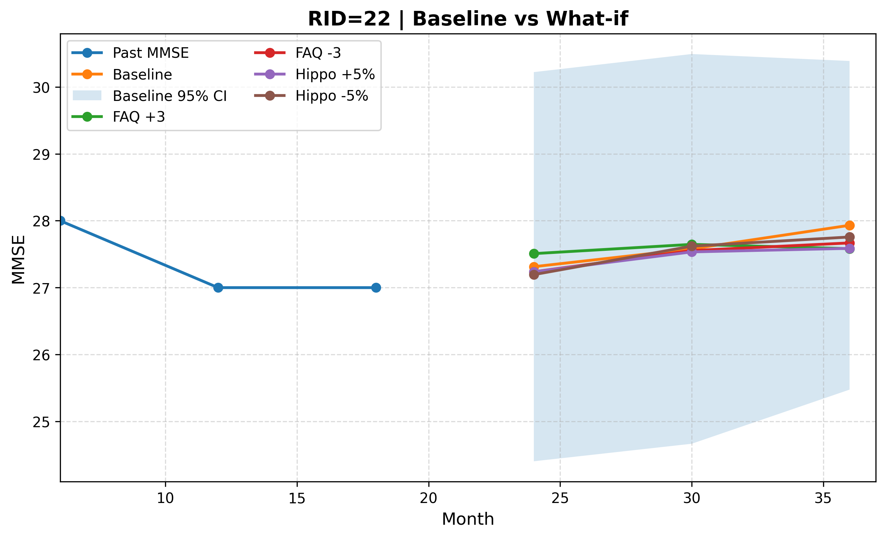

Executive Summary
Two people can receive the same Alzheimer's diagnosis and face very different futures—different speeds, different paths. Yet most machine-learning prediction models learn a "population average," flattening the fast-declining patient and the stable one onto a single curve. A recently published transition-based digital twin (arXiv:2606.09671) takes direct aim at that limitation. Instead of learning a patient's entire time series at once, it treats the "transition" between two adjacent visits as the unit of learning, and so delivers personalized progression—together with its uncertainty—even in the sparse, irregular reality of clinical data.
The heart of it is a design that uses little data more intelligently. In a research cohort where the average patient is seen only about four times, learning each full sequence leaves you with a few hundred examples; splitting the record into adjacent visit pairs multiplies the effective number of training units several times over. In the paper's reported results, the transition-based model was roughly 10 percentage points more accurate at diagnostic classification than the sequence-based model, and rather than declaring a single future point, it also quantified the uncertainty that says "probably within this range."
In the end, all of this performance reduces to one question of data quality: how do you handle sparse longitudinal data? With dementia projected to reach about 140 million people worldwide by 2050, and South Korea crossing one million dementia patients in 2026, the foundation of an AI that predicts the individual is not more data but better-defined data. This report examines that intersection through the lens of data quality.
The core of this report compresses into four numbers. The first three are the original paper's reported results; the last is the value digital twins are already delivering in clinical practice.
~90.6%
Diagnostic classification accuracy of the transition-based model (sparse ADNI data, as reported)
+~10pp
Accuracy gain over the sequence-based model — the essence of data efficiency
~4 visits
Actual visits per patient — sparsity of longitudinal data, measured
17–35%
Clinical-trial control arm shrunk by digital twins (Unlearn.AI)
Same Diagnosis, Different Futures
Suppose a parent has just been diagnosed with Alzheimer's. The family's first question is rarely about the name of the disease—it is about time. "How will this progress, and how fast?" Even the doctor struggles to answer precisely. With the same Alzheimer's, one person changes gradually over years while another declines steeply, because the speed and path of progression differ from person to person.
And yet most of the predictive AI meant to answer that question learns a "population average." It draws a single curve from the averaged trajectories of hundreds of patients, then places the new patient on top of it. The average is statistically safe, but the one future the family actually wants—this person's—dissolves into the blur. The fast-declining patient and the stable one get flattened onto the same line.
Paradoxically, the arrival of new drugs has made this limitation sharper, not softer. Lecanemab (Leqembi) and donanemab (Kisunla) were approved as the first disease-modifying treatments to slow Alzheimer's progression, but their effects, too, are reported as group averages. Lecanemab slowed cognitive decline by about 27% versus placebo; donanemab cut the risk of progression by 35–36% in the low-tau group. Meaningful numbers, all of them—but they are average effects across a population. Who benefits, when, and by how much still varies from individual to individual.
Population-average AI answers "how does this disease usually progress?" What we actually need is "how will my parent progress?" In an era of new drugs, predicting the individual beyond the average does not become less important—it becomes more so.
The Wall of Sparse, Irregular Data
Even when you want to predict the individual, the data in hand can be daunting. The standard resource for Alzheimer's progression research is the ADNI (Alzheimer's Disease Neuroimaging Initiative) cohort—a large study that has tracked more than 2,400 participants since 2004. But look at any one person's record and the story changes.
ADNI's "ideal" follow-up schedule calls for seven or eight visits. In practice, the average lands at four or five. In the subset this paper uses, the average drops to roughly 3.7 visits per patient. Pool the records of all 760 patients and you still have only 2,801 visits. People drop out partway through, miss scheduled appointments, and skip the occasional test.
Sparsity is not the only problem. The intervals between visits are uneven, too—six months for one person, a year or two for another. The table below sets out the data reality that any time-series model has to face.
| Dimension | Ideal | Reality |
|---|---|---|
| Number of visits | 7–8 (planned schedule) | ~4 on average (~3.7 in this paper's subset) |
| Visit intervals | Regular cadence | Non-uniform: 6 / 12 / 24 / 36 months |
| Completeness | Full follow-up throughout | Frequent dropout and missingness |
| Training samples | Many long, complete sequences | Few short, incomplete sequences |
Sparsity and irregularity are not mere inconveniences—they are a wall in front of prediction. A sequence model that learns the whole time series at once wants long, complete records, but clinical reality offers only short, broken ones. Recruiting more patients takes years and enormous cost. So the question shifts. Not "should we collect more data?" but "how do we make better use of the data we already have?"
The Transition-Based Digital Twin: Farther on Less Data
The paper's idea is simple but powerful. Instead of learning a patient's whole journey as one long story, it makes "the single step from this visit to the next" the unit of learning. This is transition-based modeling. A patient's digital twin is built not as one grand biography but as a large collection of small transitions, each carrying one state to the next.

3.1Why "transition" uses data better than "sequence"
The difference begins with sample count. Learn the record of a patient with only four visits as one full sequence, and that patient becomes a single training example. Split it into adjacent visit pairs, and you get three transitions—1→2, 2→3, 3→4. From the same data, the effective number of training units multiplies. In practice, the short records of 760 patients swelled to roughly 2,000 transition pairs.
The two cards below show how the same patient data turns into different amounts of training signal under each approach.
Sequence-based learning
Bundles all of a patient's visits into one long time series. It captures long-range dependencies, but on sparse data the number of training examples is capped at the number of patients.
1 patient → 1 training sequence
Transition-based learning
Uses each pair of adjacent visits as a training unit. Samples grow sharply, and on sparse data the model learns stable "local state transitions" rather than fragile long-range dependencies.
1 patient with 4 visits → 3 transition pairs
It is not only data efficiency that improves. On sparse, broken records, "a short transition from the current state to the next" is learned far more reliably than "the distant past explains the distant future." A design that uses little data better turns out to be a more robust design as well.
3.2Performance: what the paper reported
The paper compared a transition-based model (an MLP) and a sequence-based model (a BiLSTM) on the same data. Trained on nothing but the sparse records of 760 patients and 2,801 visits, the transition-based model led consistently in both diagnostic classification and cognitive-score prediction. The table below lists the key metrics reported in the paper's Table 1.
| Metric | Transition-based (MLP) | Sequence-based (BiLSTM) |
|---|---|---|
| Diagnostic classification accuracy | 0.906 | 0.806 |
| Diagnostic classification AUC | 0.976 | 0.928 |
| Diagnostic classification Macro-F1 | 0.908 | 0.798 |
| Cognitive-score (MMSE) prediction error (RMSE) | 2.149 | 2.687 |
Diagnostic accuracy was about 10 percentage points higher (0.906 vs. 0.806); on Macro-F1, which is sensitive to class imbalance, it led by nearly 11 points (0.908 vs. 0.798); and cognitive-score prediction error fell by roughly 20%. This is not the luck of one or two metrics but a consistent gap across classification and regression alike—the result of the same data with a different unit of learning. The paper goes further, combining static features (unchanging information such as age and genotype) with dynamic features (changes measured at each visit), and reports that when an mRMR feature-selection step narrowed the inputs to just 15 key variables, validation accuracy peaked at 0.943. Throwing in every available feature actually hurt performance—a signal that choosing data well matters more than adding more of it.

Using transitions as the unit of learning brings one more capability: what-if scenarios. On the digital twin, you can simulate "if this variable changed like so, how would the progression path differ?" Instead of seeing the individual's future as one fixed line, you can draw it as several branches that diverge by condition.
The AI That Says "Maybe": Uncertainty and Trust
In medicine, how confident a model is matters as much as how accurate it is. An AI that flatly declares "a cognitive score of 22 in two years" and one that says "likely 20 to 24, with this much confidence" are entirely different tools at the bedside. The first invites decisions that are hard to undo when it is wrong; the second prompts the doctor to watch high-uncertainty patients more closely and lets families prepare without either overconfidence or excess dread.
This paper attaches intervals to its predictions using Monte Carlo Dropout. Dropout is normally switched off after training; leave it on at inference time and run the model many times, and each pass returns a slightly different answer. The spread of those answers becomes the uncertainty interval—a measure of how much a given prediction wavers. The model delivers not a single point but a range and a confidence level.

What matters is that this uncertainty be well-calibrated. When the AI says it is "90% confident," it has to be right nine times out of ten for that confidence to be useful. The paper checked this consistency with the Expected Calibration Error (ECE), and the overall ECE was a very low 0.0185—meaning the confidence the model expressed and its actual hit rate barely diverged. This is an AI that moves closer to admitting "I don't know" when it doesn't, rather than being confidently wrong.

4.1The minimum condition for trust: leak-free validation
Before you quantify uncertainty, you have to doubt whether the model's performance is real at all. The most common trap in longitudinal data is leakage. If different visits from the same patient land in both the training and the evaluation sets, the model scores falsely high by "recognizing a patient it has already seen"—like a student who aced the exam after seeing the questions in advance.
This paper blocked leakage with a subject-level split: all of one patient's records go into training only, or evaluation only, dividing the data by person. It looks minor, but if it breaks, every impressive accuracy figure turns false the moment it reaches the clinic. How you split the data is what determines its trustworthiness.
Good medical AI is not the AI that pins down a more accurate single point, but the AI that honestly says "probably within this range"—and whose honesty is verified by data. Uncertainty quantification and leak-free validation are not optional; they are the minimum condition for clinical trust.
It Comes Down to Data Quality
Reduce the whole story to one line and it reads like this: this model's performance came not from more data but from a design that defined and structured sparse data better. Data-quality variables—visit frequency, missing-data handling, sample unit, leakage control—converted directly into per-patient prediction reliability. It was the definition of the data, not the model, that set the ceiling on performance.
5.1A design lesson that transfers to other industries
The principle is not confined to Alzheimer's. Every field that has to extract personalized predictions from sparsely observed time series carries the same problem: predictive maintenance, where equipment is inspected only occasionally; churn prediction, where customers leave faint signals; industrial processes too expensive to measure often. "Transition-based learning + uncertainty quantification + leak-free validation" is a design lesson that transfers straight into these domains.
When companies adopt AI, the diagnosis they hear most often is "we don't have enough data." The prescription this paper offers is different: "redesign the definition and the sample unit of your data." With the same data, changing the unit of learning can multiply the effective sample, and changing the split can restore reliability. Before collecting more data, redefine the data you already have.
5.2The timing: markets and aging
The timing lines up, too. The healthcare digital-twin market sits in an early high-growth phase, with estimated compound annual growth rates ranging from 25.9% to 68% depending on the source, and personalized medicine is its largest segment (around 27%). Companies like Unlearn.AI have already won formal qualification from the European Medicines Agency (EMA) for using digital twins to shrink clinical-trial control arms by 17–35%. That said, no pivotal trial has yet won drug approval on virtual controls alone; digital twins remain at the exploratory and supportive stage.
South Korea's context is heavier still. Dementia patients are estimated at about 970,000 in 2025 and cross one million in 2026. The national cost of dementia care has reached 22.9 trillion won—roughly 1% of GDP. "An AI that predicts the individual beyond the population average" is no longer an academic curiosity; it is a real problem an aging society has to shoulder.
Editor's Note. Pebblous is not a medical-AI company. We pay attention to this paper not to solve Alzheimer's directly, but because the data-quality principle proven here holds for every sparse-data AI. The proposition that data variables—observation frequency, missingness, leakage—become prediction reliability is the very problem Pebblous has worked on through AI-Ready Data and DataClinic. We hope this report reads as a case in which that principle confirmed its universality on medicine's most demanding stage.
Conclusion: Beyond the Average, Honestly Toward the Individual
The transition-based digital twin sends a message along two tracks. One is methodological: a design that uses little data better, an honesty that speaks in ranges rather than points, and validation that blocks leakage all combine to move past the population average toward the individual's future. The other is a matter of perspective: what holds medical AI back is not the limits of the model but the definition of the data—and that is where the breakthrough lies, too.
The promise that "AI will predict my parent's Alzheimer's" is still at the research stage. Reaching real clinical care will take further validation, regulatory approval, and the safe acquisition of personal data. But the direction is clear. An AI that delivers individual progression together with its uncertainty starts not by waiting for more data, but by defining the data it already has more carefully.
One-sentence summary: the foundation of an AI that predicts the individual is not more data but better-defined data. Alzheimer's—the hardest stage there is—has once again proven that data quality is prediction reliability.
References
Sources cited in the text are organized into three groups: academic, policy & statistics, and market & industry.
R.1Academic
- 1.Huang, Zhang, Michopoulou, Kipps, Attar. (2026). "Transition-Based Digital Twin Modelling for Alzheimer's Disease under Sparse Longitudinal Data." arXiv:2606.09671
- 2.Wang et al. (2025). "Using AI-generated digital twins to boost clinical trial efficiency in Alzheimer's disease." Alzheimer's & Dementia: Translational Research & Clinical Interventions. PMC12639399
- 3.van Dyck, C. H. et al. (2022). "Lecanemab in Early Alzheimer's Disease (CLARITY AD)." New England Journal of Medicine. DOI:10.1056/NEJMoa2212948
- 4.Sims, J. R. et al. (2023). "Donanemab in Early Symptomatic Alzheimer Disease (TRAILBLAZER-ALZ 2)." JAMA. JAMA
- 5.Weber, M. et al. / Worldwide ADNI (2021). ADNI cohort size and dropout statistics. Alzheimer's & Dementia. adni.loni.usc.edu
- 6.GBD 2019 Dementia Forecasting Collaborators. (2022). Estimation of the global prevalence of dementia in 2019 and forecasted prevalence in 2050. Lancet Public Health.
R.2Policy & Statistics
- 7.World Health Organization. (2023). Dementia Fact Sheet. WHO
- 8.National Institute of Dementia & Ministry of Health and Welfare, Korea. (2024). Korean Dementia Observatory 2024; 2023 Dementia Epidemiology Survey. Korea ~970,000 patients; crossing 1 million in 2026; national cost 22.9 trillion won. nid.or.kr
- 9.Alzheimer's Association. (2025). 2025 Alzheimer's Disease Facts and Figures. alz.org
- 10.U.S. Food and Drug Administration. (2024). Lecanemab (2023-07-06) and donanemab (2024-07-02) approval letters; external-control-arm draft guidance (2023-02). FDA
- 11.Alzheimer's Disease Neuroimaging Initiative. Cohort and visit schedule. adni.loni.usc.edu
R.3Market & Industry
- 12.Grand View Research. (2024). Healthcare Digital Twins Market Size, Share & Trends Analysis Report. CAGR 25.9%, personalized-medicine segment ~27%. Grand View Research
- 13.MarketsandMarkets. (2024). Digital Twins in Healthcare Market — Global Forecast to 2030. CAGR 68%. MarketsandMarkets
- 14.Unlearn.AI. (2024). TwinRCT / PROCOVA. Control-arm reduction 17–35%, EMA qualification. unlearn.ai